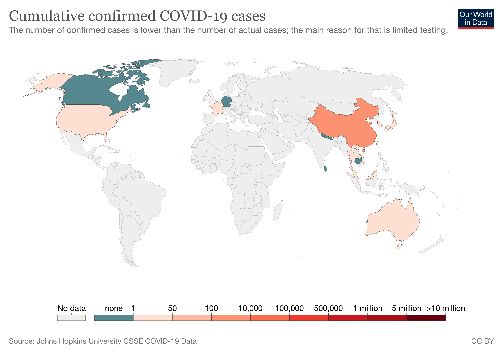

The start of the SARS-CoV-2 virus was first seen when there were some unexplained cases of pneumonia recorded in Wuhan City, Hubei Province, China. Soon, the World Health Organization declares that there is a new type of virus. In the start of the epidemic in Wuhan, some cases were related to the Wuhan Huanan Seafood Market. The victims of the cases were some dealers and vendors. The market was shut down by the authorities on 1st January for disinfection. Wild animal products and seafood were suspected to be the start of the epidemic. The World Health Organization believes that the SARS-CoV-2 virus came from bats because they were also related to other coronaviruses such as Hendra virus, Nipah virus and SARS-CoV (SARS). The WHO also suggests that the virus may also have come from the pangolins because they are a middleman host.
The first country to catch the coronavirus disease 2019 was China. WHO stated that Thailand was the first country to catch coronavirus disease after China. Thailand got their first case because a woman from Wuhan went there. According to a The Guardian article that was published 26th, January, 2020, they said that the following countries after China and Thailand to catch coronavirus are France, Australia, Malaysia, Canada, the United States of America, Japan, Nepal, Singapore, South Korea, Vietnam, Thailand, Taiwan, Macao and many more. On December, 30th, 2019, an ophthalmologist from Wuhan tells doctors that a new disease (the coronavirus disease) appeared in his hospital. China announced a lockdown for at least 20 cities and also started to build a temporary hospital that would have 1000 beds in order to lower the pressure of other hospitals.
